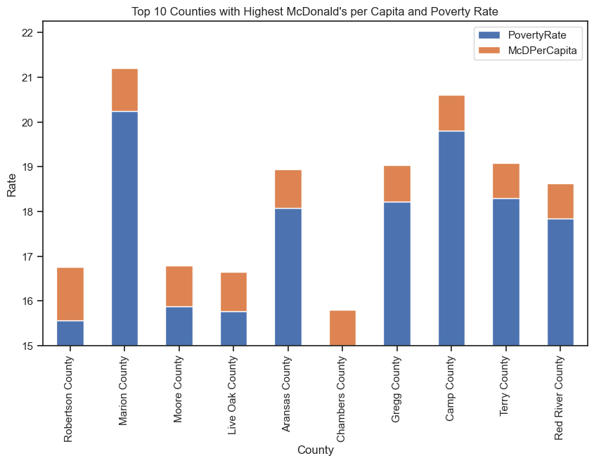

Food Access in the United States
Access to healthy and affordable food is a critical issue for many Americans, particularly those living in low-income and rural areas. Addressing food deserts, improving SNAP participation rates,
and increasing access to farmer's markets are just some of the ways we can work to improve food access and reduce health disparities. There are also many options of fast food that many Americans
might consider to choose from if they find that option to be more convenient rather than going to a grocery store that they might have low access to either by not having a mode of transportation or
not being in proximity to one. We have chosen to look at McDonalds as one of the many choices of fast food and casual dining restaurants as it is widely known throughout the United States for their
delicious fast food. Here you can visit Food Access on more information on Food access
that affects Census tracts that are monitored by the US Census.

Low access to healthy food options, low income, and lack of transportation can all contribute to a higher likelihood of consuming fast food. Low access to healthy food options can refer to living in a food desert, which is an area where it is difficult to access affordable, healthy food options. In these areas, fast food restaurants may be one of the few options for food, and may be more affordable than other options. Additionally, fast food restaurants are often located in areas with high traffic and visibility, making them more accessible than other food options.
Low income can also contribute to a higher likelihood of consuming fast food. Fast food restaurants are often cheaper and more convenient than other food options, making them an attractive choice for those on a tight budget. Additionally, low-income individuals may have less time and resources to prepare healthy meals at home, making fast food a more practical option.
Lack of transportation can also contribute to a higher likelihood of consuming fast food. For those without a car, fast food restaurants may be one of the few food options that are within walking distance or accessible by public transportation. Additionally, for those who do have access to transportation, fast food restaurants are often located along major roads and highways, making them a convenient option for those on-the-go.
Overall, low access to healthy food options, low income, and lack of transportation can all contribute to a higher likelihood of consuming fast food. These factors can create barriers to accessing healthy food options, making fast food a more practical and accessible choice for many individuals. Addressing these factors, such as by increasing access to healthy food options in food deserts, improving transportation options, and increasing financial resources, can help to reduce the prevalence of fast food consumption and promote healthier eating habits.
View Data
View Story